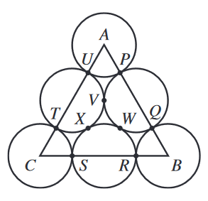

In the figure shown below, each of the points labeled \(P\) through \(X\) is a point of tangency between 2 circles. Each vertex of \(\triangle{ABC}\) is the center of a circle. Each circle has a radius of \(r\) cm. Which of the following expressions represents the area, in square centimeters, of \(\triangle{ABC}\) ?

Each side of the triangle has a length of \(r+2r+r= 4r \).
Since the triangle is equilateral, it can be broken up into two \(30-60-90\) triangles. The ratio of the base of this triangle to the height is \(1:\sqrt{3}\).
Given a base of \(2r\) (after the equilateral triangle is split in two), the corresponding height will be \(2r\sqrt{3}\). Then we obtain the area of the entire triangle:
$$ A=\frac{1}{2}bh $$
$$ A = \frac{1}{2}(4r)(2r\sqrt{3}) $$
$$ A = \boxed{4r^2\sqrt{3}} $$